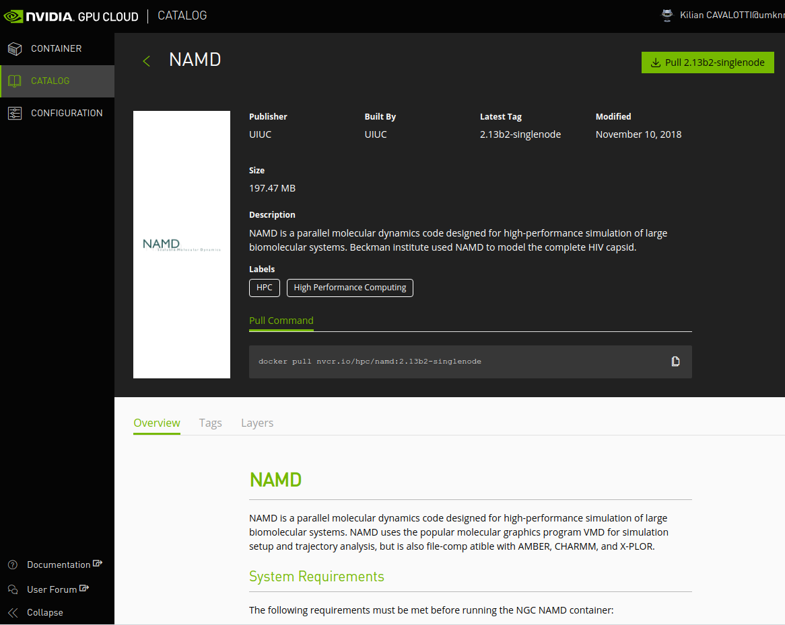

Singularity
Singularity is a tool for running containers on HPC systems, similar to Docker.
Introduction#
Containers are a solution to the problem of how to get software to run reliably when moved from one computing environment to another. They also resolve installation problems by packaging all the dependencies of an application within a self-sustainable image, a.k.a a container.
What's a container?
Put simply, a container consists of an entire runtime environment: an application, plus all its dependencies, libraries and other binaries, and configuration files needed to run it, bundled into one package. By containerizing the application platform and its dependencies, differences in OS distributions and underlying infrastructure are abstracted away.
Why not Docker?#
Docker has long been the reference and the most popular container framework in DevOps and Enterprise IT environments, so why not use Docker on Sherlock? Well, for a variety of technical reasons, mostly related to security.
Docker has never been designed nor developed to run in multi-tenants environments, and even less on HPC clusters. Specifically:
- Docker requires a daemon running as
rooton all of the compute nodes, which has serious security implications, - all authenticated actions (such as
login,push...) are also executed asroot, meaning that multiple users can't use those functions on the same node, - Docker uses cgroups to isolate containers, as does the Slurm scheduler, which uses cgroups to allocate resources to jobs and enforce limits. Those uses are unfortunately conflicting.
- but most importantly, allowing users to run Docker containers will give
them
rootprivileges inside that container, which will in turn let them access any of the clusters' filesystems asroot. This opens the door to user impersonation, inappropriate file tampering or stealing, and is obviously not something that can be allowed on a shared resource.
That last point is certainly the single most important reason why we won't use Docker on Sherlock.
Why Singularity?#
Singularity is Docker for HPC systems
Singularity allows running Docker containers natively, and is a perfect replacement for Docker on HPC systems such as Sherlock. That means that existing Docker container can be directly imported and natively run with SIngularity.
Despite Docker's shortcomings on HPC systems, the appeal of containers for scientific computing is undeniable, which is why we provide Singularity on Sherlock. Singularity is an alternative container framework, especially designed to run scientific applications on HPC clusters.
Singularity provides the same functionalities as Docker, without any of the drawbacks listed above. Using a completely different implementation, it doesn't require any privilege to run containers, and allow direct interaction with existing Docker containers.
The main motivation to use Singularity over Docker is the fact that it's been developed with HPC systems in mind, to solve those specific problems:
- security: a user in the container is the same user as the one running the container, so no privilege escalation possible,
- ease of deployment: no daemon running as root on each node, a container is simply an executable,
- no need to mount filesystems or do bind mappings to access devices,
- ability to run MPI jobs based on containers,
- and more...
More documentation#
The following documentation specifically intended for using Singularity on Sherlock. For more complete documentation about building and running containers with Singularity, please see the Singularity documentation.
Singularity on Sherlock#
As announced during the SC'18 Supercomputing Conference, Singularity is an integral part of the Sherlock cluster, and Singularity commands can be executed natively on any login or compute node, without the need to load any additional module.
Importing containers#
Pre-built containers can be obtained from a variety of sources. For instance:
- DockerHub contains containers for various software packages, which can be directly used with Singularity,
- SingularityHub is a registry for scientific linux containers,
- the NVIDIA GPU Cloud registry for GPU-optimized containers,
- many individual projects contain specific instructions for installation via Docker and/or Singularity, and may provide pre-built images in other locations.
To illustrate how Singularity can import and run Docker containers, here's an example how to install and run the OpenFOAM CFD solver using Singularity. OpenFOAM can be quite difficult to install manually, but Singularity makes it very easy.
Interactive or batch usage
This example shows how to use Singularity interactively, but Singularity containers can be run in batch jobs as well.
The first step is to request an interactive shell, and to load the singularity module. Singularity images can be pulled directly from the compute nodes, and Singularity uses multiple CPU cores when assembling the image, so requesting multiple cores in your job can make the pull operation faster:
$ srun -c 4 --pty bash
We recommend storing Singularity images in $GROUP_HOME, as container images
can take significant space in your $HOME directory.
$ mkdir -p $GROUP_HOME/$USER/simg $ cd $GROUP_HOME/$USER/simg
Then, the OpenFOAM container could be pulled directly from DockerHub by Singularity. This can take a moment to complete:
$ singularity pull docker://openfoam/openfoam6-paraview54 Docker image path: index.docker.io/openfoam/openfoam6-paraview54:latest Cache folder set to /scratch/users/kilian/.singularity/docker Importing: base Singularity environment Exploding layer: sha256:1be7f2b886e89a58e59c4e685fcc5905a26ddef3201f290b96f1eff7d778e122.tar.gz [...] Building Singularity image... Singularity container built: ./openfoam6-paraview54.simg Cleaning up... Done. Container is at: ./openfoam6-paraview54.simg
Running containers#
Once the image is downloaded, you are ready to run OpenFOAM from the container.
The singularity shell command can be used to start the container, and run a
shell within that image:
By default on Sherlock, all the filesystems that are available on the compute
node will also be available in the container. If you want to start your shell
in a specific directory, you can use the --pwd /path/ option. For instance,
we'll create a /tmp/openfoam_test/ directory to store our tests results (that
will be wiped out at the end of the job), and start the container shell there:
$ mkdir /tmp/openfoam_test $ singularity shell --pwd /tmp/openfoam_test openfoam6-paraview54.simg Singularity: Invoking an interactive shell within container... Singularity openfoam6-paraview54.simg:/tmp/openfoam_test>
You're now in the container, as denoted by the shell prompt
(Singularity[...].simg:[path]>), which is different from the prompt displayed on the
compute node (which usually looks like [login]@[compute_node] [path]$.
OpenFOAM provides a convenience script that can be sourced to make OpenFOAM commands directly accessible and set a few useful environment variables:
> source /opt/openfoam6/etc/bashrc
Now, we can run a simple example using OpenFOAM:
> cp -r $FOAM_TUTORIALS/incompressible/simpleFoam/pitzDaily .
> cd pitzDaily
> blockMesh
[...]
End
> simpleFoam
/*---------------------------------------------------------------------------*\
========= |
\\ / F ield | OpenFOAM: The Open Source CFD Toolbox
\\ / O peration | Website: https://openfoam.org
\\ / A nd | Version: 6
\\/ M anipulation |
\*---------------------------------------------------------------------------*/
Build : 6-1a0c91b3baa8
Exec : simpleFoam
Date : Oct 05 2018
Time : 23:37:30
Host : "sh-06-33.int"
PID : 14670
I/O : uncollated
Case : /tmp/openfoam_test/pitzDaily
nProcs : 1
sigFpe : Enabling floating point exception trapping (FOAM_SIGFPE).
fileModificationChecking : Monitoring run-time modified files using timeStampMaster (fileModificationSkew 10)
allowSystemOperations : Allowing user-supplied system call operations
// * * * * * * * * * * * * * * * * * * * * * * * * * * * * * * * * * * * * * //
Create time
[...]
SIMPLE solution converged in 288 iterations
streamLine streamlines write:
seeded 10 particles
Tracks:10
Total samples:11980
Writing data to "/tmp/openfoam_test/pitzDaily/postProcessing/sets/streamlines/288"
End
>
When the simulation is done, you can exit the container with:
> exit
Because the container can see all the compute node's filesystems, the
simulation output will be available in /tmp/openfoam_test after you exit the
container:
$ ls /tmp/openfoam_test/pitzDaily/postProcessing/ sets
GPU-enabled containers#
Sherlock also supports the use of container images provided by NVIDIA in the NVIDIA GPU Cloud (NGC). This registry provides GPU-accelerated containers for the most popular HPC and deep-learning scientific applications.
GPU support
Containers provided on NGC are only supported on Pascal and Volta architectures (TITAN Xp, Tesla P40, P100 or V100). For GPUs from the previous generations (GTX TITAN Black/X, Tesla K20/K80), things may or may not work.
We recommend making sure to select a supported GPU generation by adding the following directive to your batch script when submitting a job to run GPU-enabled containers from NGC:
#SBATCH -C "GPU_GEN:PSC|GPU_GEN:VLT"
Pulling NGC images#
As before, we start by requesting an interactive shell with multiple CPU cores, loading the Singularity module and moving the directory where we'll save those images:
$ srun -c 4 --pty bash $ cd $GROUP_HOME/simg
A GPU is not required for pulling GPU-enabled containers
GPU-enabled containers can be pulled on any node, including nodes without a GPU. But their execution requires a GPU and thus, they need to be executed within a GPU job. See the GPU job section for more information.
To be able to pull an image from NGC, authentication credentials must be set. Users need to register and create an NGC API key, complete details could be found in the NGC Getting Started Guide.
You can then set the following environment variable to allow Singularity to authenticate with NGC:
$ export SINGULARITY_DOCKER_USERNAME='$oauthtoken' $ export SINGULARITY_DOCKER_PASSWORD=<NVIDIA NGC API key>
Note
The SINGULARITY_DOCKER_USERNAME environment variable must be set to the
literal $oauthtoken string, for every user. It should not be replaced by
anything else. Only the API key is specific to each user.
Once credentials are set in the environment, container images can be pulled from the NGC registry normally.
The general form of the Singularity command used to pull NGC containers is: $
singularity pull docker://nvcr.io/<registry>/<app:tag>
For example to pull the NAMD NGC container tagged with version
2.12-171025 the corresponding command would be:
$ singularity pull docker://nvcr.io/hpc/namd:2.12-171025
After this command has finished, we'll have a Singularity image file in the
current directory, named namd-2.12-171025.simg.
Running NGC containers#
Instructions about running NGC containers are provided on the NGC website, under each application:

Each application comes with specific running instructions, so we recommend to follow the container's particular guidelines before running it with Singularity.
Containers that lack Singularity documentation have not been tested with Singularity.
Since all NGC containers are optimized for GPU acceleration, they will always
be executed with the --nv Singularity option, to enable GPU support within
the container.
We also need to submit a job requesting a GPU to run GPU-enabled containers. For instance:
$ srun -p gpu -c 4 --gres gpu:1 --pty bash
This will start an interactive shell on a GPU node, with 4 CPU cores and 1 GPU.
The NAMD container that was pulled just before can now be started with the following commands. We start by creating a temporary directory to hold the execution results, and start the container using this as the current directory:
$ mkdir /tmp/namd_test $ singularity shell --nv --pwd /tmp/namd_test $GROUP_HOME/simg/namd-2.12-171025.simg Singularity: Invoking an interactive shell within container... Singularity namd-2.12-171025.simg:/tmp/namd_test>
From there, we can run a NAMD test to verify that everything is working as expected.
> cp -r /workspace/examples . > /opt/namd/namd-multicore +p4 +idlepoll examples/apoa1/apoa1.namd Charm++: standalone mode (not using charmrun) Charm++> Running in Multicore mode: 4 threads Charm++> Using recursive bisection (scheme 3) for topology aware partitions Converse/Charm++ Commit ID: v6.8.2 [...] Info: Built with CUDA version 9000 Did not find +devices i,j,k,... argument, using all Pe 1 physical rank 1 will use CUDA device of pe 2 Pe 3 physical rank 3 will use CUDA device of pe 2 Pe 0 physical rank 0 will use CUDA device of pe 2 Pe 2 physical rank 2 binding to CUDA device 0 on sh-114-13.int: 'TITAN Xp' Mem: 12196MB Rev: 6.1 Info: NAMD 2.12 for Linux-x86_64-multicore-CUDA [...] Info: SIMULATION PARAMETERS: Info: TIMESTEP 1 [...] ENERGY: 2000 20247.5090 20325.4554 5719.0088 183.9328 -340639.3103 25366.3986 0.0000 0.0000 46364.9951 -222432.0107 168.6631 -268797.0057 -222054.5175 168.8733 -1129.9509 -1799.6459 921491.4634 -2007.8380 -2007.4145 WRITING EXTENDED SYSTEM TO OUTPUT FILE AT STEP 2000 WRITING COORDINATES TO OUTPUT FILE AT STEP 2000 The last position output (seq=-2) takes 0.001 seconds, 559.844 MB of memory in use WRITING VELOCITIES TO OUTPUT FILE AT STEP 2000 The last velocity output (seq=-2) takes 0.001 seconds, 559.844 MB of memory in use ==================================================== WallClock: 17.593451 CPUTime: 17.497925 Memory: 559.843750 MB [Partition 0][Node 0] End of program
The simulation should take a few seconds to run. You can verify that it correctly executed on a GPU in the output above. When it's done, you can exit the container with:
> exit
Because the container can see all the compute node's filesystems, the
simulation output will be available in /tmp/named_test after you exit the
container:
$ cd /tmp/namd_test/examples/apoa1/ $ ls apoa1-out* apoa1-out.coor apoa1-out.vel apoa1-out.xsc
Building your own containers#
Building Singularity containers requires root privileges, and as such,
cannot be done on Sherlock directly.
If you need to modify existing containers or build your own from scratch, The recommended workflow is to prepare and build your containers on your local Linux machine (it could either be a workstation, a laptop or a virtual machine), transfer the resulting container image to Sherlock, and run it there.
For complete details about how to build Singularity containers, please refer to the Singularity documentation.
-
For more information about using modules on Sherlock, please see the software modules documentation. ↩